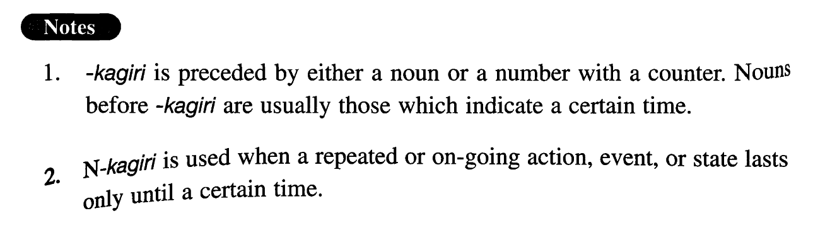

←
DoJG
→
限り (2)
(I. 85)
Example sentences
(ksa).
今度
限り
で彼のパーティーには行かないつもりだ。
This is the last time I am going to any of his parties.
(ksb).
切符は一人二枚
限り
です。
Tickets are limited to two per person.
(a).
この映画館は今月
限り
で閉館されます。
This movie house is open only until the end of this month.
(b).
今日
限り
で酒も煙草もやめます。
From today on I will give up both drinking and smoking.
(c).
セールは明日
限り
です。
Tomorrow is the last day of the sale.
(d).
その場
限り
の約束はしない方がいい。
You'd better not make an empty promise (literally: a promise limited to the moment).
(e).
貸し出しは一回三冊
限り
です。
Check-out is limited to three books at a time.
(f).
書き直しは一回
限り
です。
You can rewrite only once. (literally: Rewriting is limited to one time.)
Formation
(i)
Noun (time)
限り
今週
限り
Limited to this week; this week is the last week
(ii)
Number+Counter
限り
一度
限り
Limited to one time; only once
